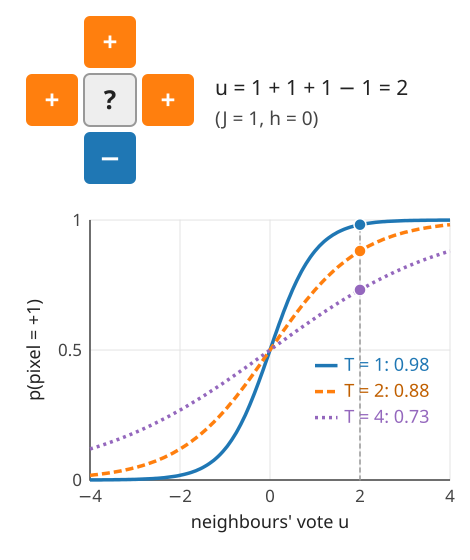
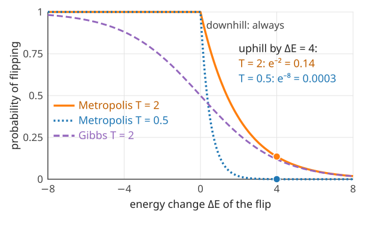
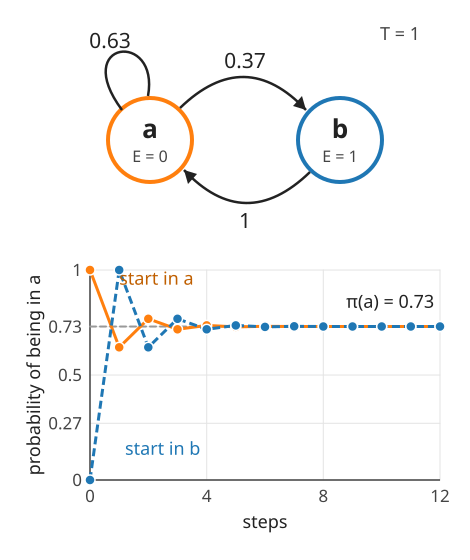
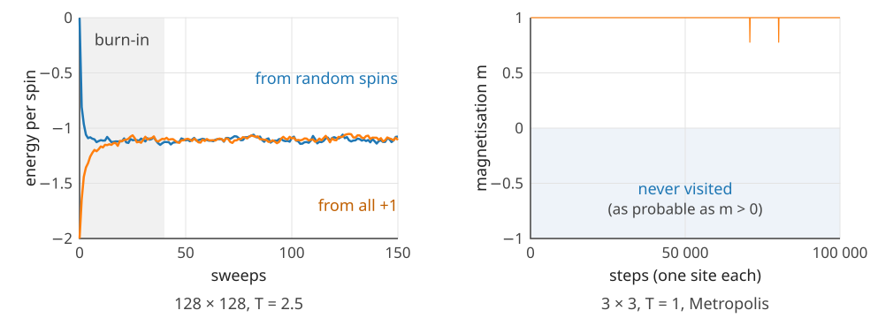
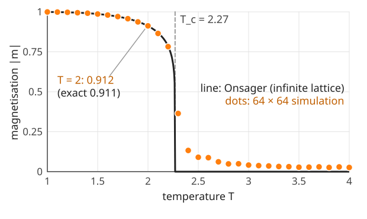
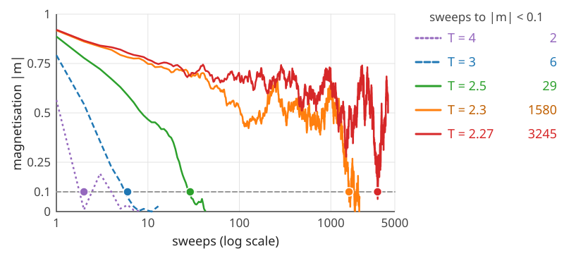
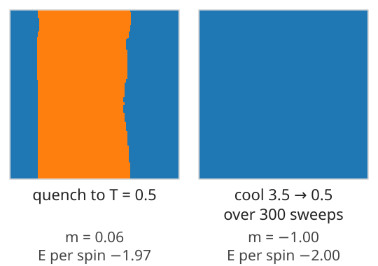

Last unit: the Gibbs distribution p(\mathbf s) \propto e^{-E(\mathbf s)/T}, and why its normaliser Z is out of reach for an image. Today: we draw samples anyway, one pixel at a time.
The local rule: a pixel given its neighbours is a coin flip with a known bias.
Two samplers: Gibbs (redraw the pixel) and Metropolis (propose a flip, maybe accept).
Why they work: a random walk whose long-run distribution is the Gibbs distribution.
What samples of a large lattice look like: the phase transition at T_c \approx 2.27.
Simulated annealing: sample while cooling, to find low energies.
Slides titled The math give the formulas and proofs; the ideas are complete without them.
Each panel is one random state of a 128 \times 128 Ising lattice (J = 1, h = 0), drawn by the methods of this unit (500 sweeps from random spins).
We cannot list 2^{16384} probabilities, but a few typical states tell us what the model believes.
Cold: large regions that agree. Hot: noise. In between, at T_c: clusters of every size.
One pixel at a time: no Z needed
Change only pixel p. Its two possible values give two states that differ in s_p alone; their energy difference involves only p and its neighbours.
The neighbours “vote”: the local fieldu_p = J\cdot(\text{sum of the 4 neighbouring spins}) + h.
Given its neighbours, the pixel is +1 with probability p(s_p = +1 \mid \text{neighbours}) = \frac{1}{1 + e^{-2u_p/T}} a logistic curve in the vote.
Example: neighbours (+, +, +, -), J = 1, h = 0: u_p = 2. At T = 2: 1/(1 + e^{-2}) = 0.88. At T = 1: 0.98; at T = 4: 0.73.
Markov property: given its neighbours, a pixel does not care about the rest of the image. Hence “Markov random field”.

The math: the local conditional
Write \mathbf s^+ and \mathbf s^- for the state with s_p = +1 and s_p = -1, everything else fixed. Every term of E that does not contain s_p is the same in both, so
It depends on the rest of the image only through the neighbours (via u_p): the Markov property. Flipping p changes the energy by \Delta E = 2s_pu_p.
Two samplers
Visit the pixels one after the other (a sweep visits each once).
Gibbs sampler (heat bath; Geman & Geman, 1984): draw the pixel anew from its local conditional, i.e. set +1 with probability 1/(1 + e^{-2u_p/T}).
Metropolis (Metropolis et al., 1953): propose to flip the pixel. Compute \Delta E:
\Delta E \le 0 (downhill): always accept;
\Delta E > 0 (uphill): accept with probability e^{-\Delta E/T}.
Uphill moves are what make it a sampler and not a minimiser. A flip with \Delta E = 4 is accepted with probability e^{-2} = 0.14 at T = 2, but only e^{-8} = 0.0003 at T = 0.5.

Try it: sampling the 3 \times 3 lattice
Why does this work? A random walk on states
The sampler moves from state to state at random: a Markov chain. Two states, a (energy 0) and b (energy 1), T = 1, Metropolis:
From a: propose b, uphill by 1: go with probability e^{-1} = 0.37, else stay.
Run long: the fraction of time in a and b settles at \boldsymbol\pi = (0.73, 0.27), whatever the start.
That is exactly the Gibbs distribution: 1/(1 + e^{-1}) = 0.73.
Balance: in the long run, traffic a \to b (0.73 \cdot 0.37 = 0.27) equals traffic b \to a (0.27 \cdot 1).

The math: stationary distribution and detailed balance
A Markov chain with transition matrix P (P_{ab} = probability to go from a to b; rows sum to 1) moves a distribution \boldsymbol\pi (a row vector) to \boldsymbol\pi P. A stationary distribution satisfies
\boldsymbol\pi P = \boldsymbol\pi: \quad \boldsymbol\pi \text{ is a left eigenvector of } P \text{ with eigenvalue } 1.
If every state can reach every other (and the chain is not periodic), it is unique and the chain converges to it from any start.
Detailed balance: \pi_aP_{ab} = \pi_bP_{ba} for all pairs. Summing over a: \sum_a\pi_aP_{ab} = \pi_b\sum_aP_{ba} = \pi_b, so detailed balance implies stationarity.
Metropolis with a symmetric proposal and E_b > E_a: P_{ab} = q\,e^{-(E_b - E_a)/T}, P_{ba} = q. Then
The Gibbs sampler satisfies it too (it is a Metropolis–Hastings move that is always accepted). Note: Z never had to be computed.
In practice: burn-in and mixing
Burn-in: the chain starts somewhere arbitrary (the noisy image, random spins). The first sweeps are not yet samples of the Gibbs distribution: discard them.
Correlated samples: consecutive states differ in a few pixels. 1000 sweeps are worth far fewer than 1000 independent samples.
Mixing: at low T the chain can stay in one region of states for a very long time. On the 3 \times 3 lattice at T = 1 it never leaves “mostly +1” in 100 000 steps, although “mostly -1” is as probable.
No convergence proofs here: in practice, run longer, start from several states, and check that the answers agree.

The phase transition
On a large lattice (here 256 \times 256, periodic, h = 0) the samples change character at the critical temperatureT_c = 2/\ln(1 + \sqrt2) \approx 2.27 (for J = 1; Onsager, 1944):
Below T_c: domains grow and one sign takes over the lattice: a magnetisation|m| well above 0 (0.91 at T = 2).
Above T_c: noise with small clusters; m \approx 0.
At T_c: clusters of all sizes, from single pixels to the whole lattice.
The model has no preferred sign, but below T_c the lattice picks one: spontaneous symmetry breaking. A tiny field h decides which.

Try it: a large lattice
The math: Onsager’s results
For the infinite square lattice with h = 0 (Onsager 1944; Yang 1952):
No transition in 1D. For a chain, the transfer matrix of unit 1 gives the free energy per spin -T\ln\mu_1 with \mu_1 = 2\cosh(J/T) (for h = 0): a smooth function of T for every T > 0. A single disagreeing pair cuts a chain into two domains at a finite energy cost 2J, so at any T > 0 such walls appear with density about e^{-2J/T} and destroy long-range order. In 2D a wall around a domain costs energy proportional to its length, which wins against the entropy of the wall below T_c.
Critical slowing down
Near T_c local updates become slow: big clusters must be dismantled one pixel at a time.
Start a 128 \times 128 lattice with all spins +1 and count the sweeps until |m| < 0.1 (the true value above T_c is 0):

For measurements near T_c, physicists use cluster algorithms that flip whole clusters at once (Swendsen & Wang, 1987); named only here.
For images, the lesson is general: a sampler with local moves can be very slow when the distribution has large-scale structure.
Simulated annealing
To find a low-energy state (Kirkpatrick et al., 1983; Geman & Geman, 1984): sample while loweringT.
At high T the chain moves freely between regions; as T drops, it settles into deeper and deeper valleys of the energy.
Cool slowly enough and it ends in a ground state.
Quench (drop T at once): domains freeze where they are. A domain wall that is flat across the whole periodic lattice cannot move by single flips without raising the energy: a local minimum.
In the demo (128 \times 128): quench to T = 0.5 from random spins: two stripes remain (m = 0.06 after 1000 sweeps) however long we wait. Cooling from 3.5 to 0.5 over 300 sweeps: one domain (m = -1), a ground state.

The math: cooling schedules
Logarithmic: T_k = c/\ln(k + 2). Geman & Geman (1984) proved that for c large enough the chain ends in a ground state with probability 1. Impractically slow: halving T needs squaring k.
Geometric: T_k = T_0\,r^k with r slightly below 1 (e.g. from T_0 to T_1 in K sweeps: r = (T_1/T_0)^{1/K}). No guarantee; what people use.
At each temperature the chain should be close to its stationary distribution before T drops further. Near T_c that takes longest (critical slowing down): cool slowest there.
Summary
Given its neighbours, a pixel is +1 with probability 1/(1 + e^{-2u_p/T}): a logistic function of the neighbours’ vote. No Z needed.
Gibbs: redraw each pixel from this rule. Metropolis: propose a flip; accept downhill always, uphill with e^{-\Delta E/T}.
Both are Markov chains whose long-run distribution is the Gibbs distribution (detailed balance). Discard the burn-in; watch out for slow mixing.
The 2D Ising model has a phase transition at T_c \approx 2.27: ordered domains below, noise above, all scales at T_c, where local samplers slow down.
Simulated annealing cools while sampling; a quench freezes into a local minimum.